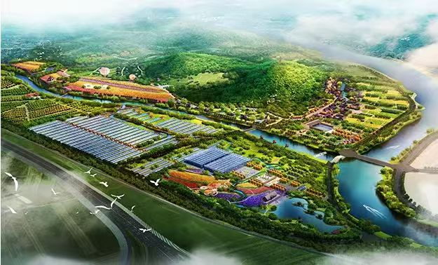

【客户背景】辽宁省佳合农联农业发展有限公司是一家以"农资购买 + 生物有机肥研发 + 复合微生物肥研发 + 农作物种植"为业务主线的现代农业服务企业，业务横跨肥料研发、农业生产资料组织与种植端落地。公司围绕"把好的肥料、好的种植方案送到田间地头"这条主线，与辽宁本地种植合作社、家庭农场保持长期合作。
【业务模型】与传统农资贸易商不同，公司的核心壁垒是"配方研发 + 田间服务"组合：研发团队根据不同土壤、不同作物设计配方肥料，再由田间服务团队配合合作社与种植户做测土配方、施肥方案、过程跟踪。这意味着公司既要有"研发驱动"的属性，也要有"田间落地"的服务能力，对内部跨部门协同要求较高。
【服务方式】华认联国际项目组的服务切入口选择了"配方研发团队与田间服务团队的协同"。通过与研发主管、田间服务经理、种植合作社联络人三类角色深度共创，输出《配方研发到田间落地的 5 步交接流程》《合作社分级服务 SOP》《田间服务人员一日工作流》等本地化工具，把"研发—服务—落地"的隐性协同显性化。
【后续价值】项目交付后，公司把田间服务团队的培养作为长期能力建设重点，尝试以"区域驻点 + 配方师轮训"的方式稳定服务质量；与华认联国际的合作也从单次管理培训延伸至"农业服务团队胜任力模型"建设。
← 返回客户案例